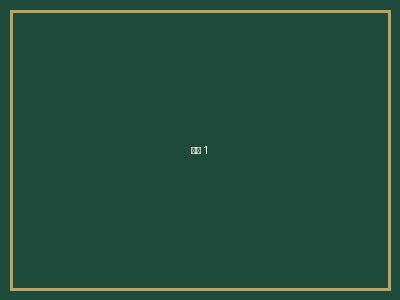

AdmittedHIGHLIGHTS
他们，已经抵达
占位示例 · 待替换真实案例精选学员录取案例 —— 点击查看完整背景与策略复盘。
SUCCESS STORIES
真实背景 · 真实策略 · 真实录取 —— 所有案例均经学员授权发布。从定位到录取，每一步都有迹可循。
HIGHLIGHTS
精选学员录取案例 —— 点击查看完整背景与策略复盘。
CASE STUDIES
以下学员背景、策略与感言为占位示例，正式上线前替换为「真实且获本人授权」的案例。
| 学生背景 | 待填写（如：上海某国际学校，GPA 3.8/4.0） |
|---|---|
| 标化成绩 | 待填写（如：托福 110 / SAT 1480） |
| 背景亮点 | 待填写（如：XX竞赛国家级奖项、创办校内社团） |
| 录取院校 | 待填写（如：宾夕法尼亚大学 经济学） |
"待填写：学员或家长的真实感言，1–2 句话。" — W同学（化名），录取于 待填写院校
| 学生背景 | 待填写 |
|---|---|
| 标化成绩 | 待填写 |
| 背景亮点 | 待填写 |
| 录取院校 | 待填写 |
"待填写：学员感言。" — L同学（化名），录取于 待填写院校
| 学生背景 | 待填写 |
|---|---|
| 标化成绩 | 待填写 |
| 背景亮点 | 待填写 |
| 录取院校 | 待填写 |
"待填写：学员感言。" — C同学（化名），录取于 待填写院校
学员之声 · TESTIMONIALS
伦敦大学学院（UCL）「文书改到第十一稿的那天，我才真正想明白自己为什么要学这个专业。途策没有替我写，而是逼我想清楚。」
香港大学「G7 测评把我自己都没意识到的优势挖了出来，后面整条申请线都顺了。」
康奈尔大学「RP 全真模拟面试做了四轮，真到面试那天反而是最放松的一次。」